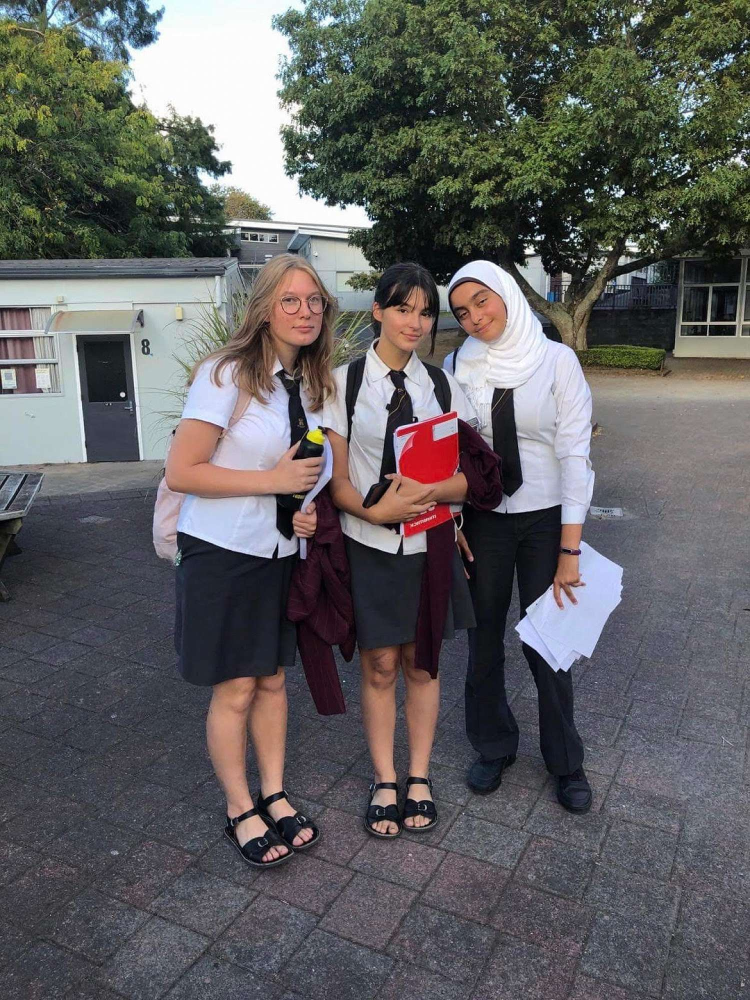

Why you should join

Debate- Why should you want to join debate? If you are looking to build up your communication skills, or even wanting to do a fun extracurricular, well then you are looking in the right place. Debate teaches you how to speak with confidence and deliberation, it is a great way to open up sociallly, and here at hamilton girls high; we offer Junior debate for year 9 and 10s and senior debate for year 11s to 13, In our senior debate we sperate into two difrrent branches: Senior Open, which means it is less competaive. This is a great alternative for people who are wanting to do debate for fun, and then there is Senior Prems, which is competative level debating for people who are wanting to do debate as a serious extracurricular or wanting to be part of the committee.
About Debate

Our Junior debate team. These people had never done debate let alone public speaking as such but with the right mentorship and guidance, we have a great Junior Debate team, which has bought us many wins!

These are our Senior Open teams, contaning Team NDL which have shown extraordinary results buy winning 4 t of their 6 deates and the other team is team 7 who won 3 out of 6 debates.

this is our senior prems team who made it to the semi finale, with their amazing skill and passion for competative debate